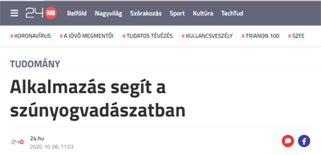
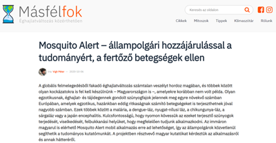
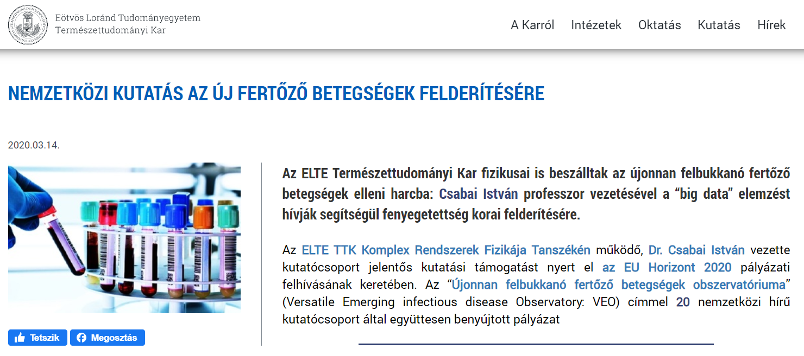
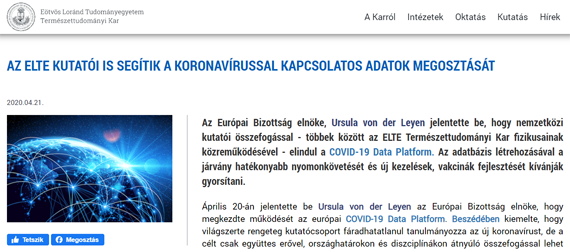
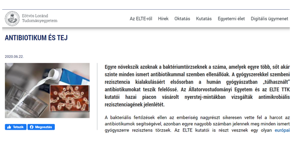
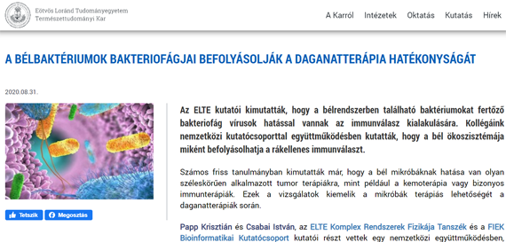
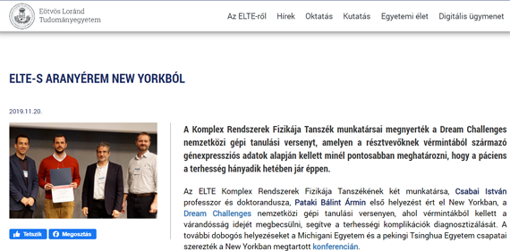
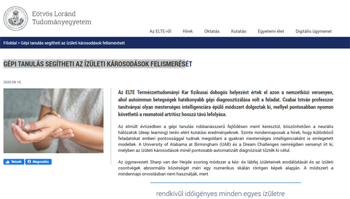
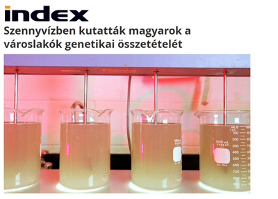
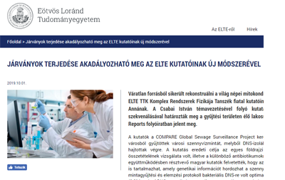

Home
Research
Projects
Publications
Collaboration
Fundings
Team
Tools
IsoMut
Kooplex
COVID-19
Teaching
Internal
In the news
Contact
In the News

Alkalmazás segít a szúnyogvadászatban
[24.hu]

Mosquito Alert – állampolgári hozzájárulással a tudományért, a fertőző betegségek ellen
[Masfelfok.hu]

Nemzetközi kutatás az új fertőző betegségek felderítésére
[elte.hu]

Az Európai Bizottság elnöke, Ursula von der Leyen jelentette be, hogy nemzetközi kutatói összefogással - többek között az ELTE Természettudományi Kar fizikusainak közreműködésével - elindul a COVID-19 Data Platform. Az adatbázis létrehozásával a járvány hatékonyabb nyomonkövetését és új kezelések, vakcinák fejlesztését kívánják gyorsítani.
[elte.hu]

Az Állatorvostudományi Egyetem és az ELTE TTK kutatói hazai piacon vásárolt nyerstej-mintákban vizsgálták antimikrobiális rezisztenciagének jelenlétét.
[elte.hu]

A bélbaktériumok bakteriofágjai befolyásolják a daganatterápia hatékonyságát
[elte.hu]

Pataki Bálint Ármin első helyezést ért el New Yorkban, a Dream Challenges nemzetközi gépi tanulási versenyen, ahol vérmintákból kellett a várandósság idejét megbecsülni, segítve a terhességi komplikációk diagnosztizálását.
[elte.hu]

Olar Alex és Pataki Bálint Ármin dobogós helyezést értek el azon a nemzetközi versenyen, ahol autoimmun betegségek hatékonyabb gépi diagnosztizálása volt a feladat. Olyan mesterséges intelligenciára épülő módszert dolgoztak ki, mellyel pontosabban nyomon követhető a reumatoid artritisz hosszú távú lefolyása.
[elte.hu]
A mesterséges intelligencia már itt van a magyar egészségügyben
[portfolio.hu]

Szennyvízben kutatták magyarok a városlakók genetikai összetételét
[index.hu]

Járványok terjedése akadályozható meg az ELTE kutatóinak új módszerével
[elte.hu]